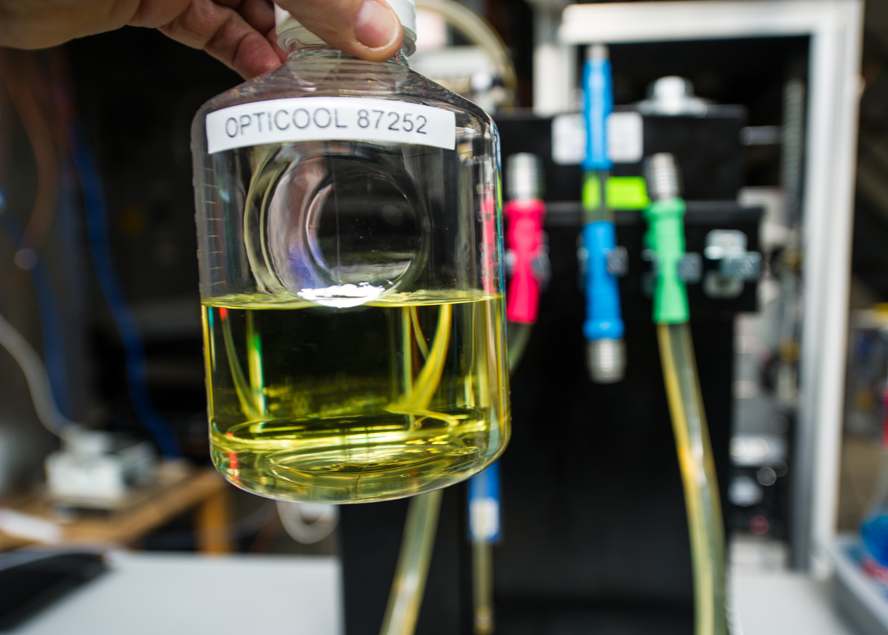
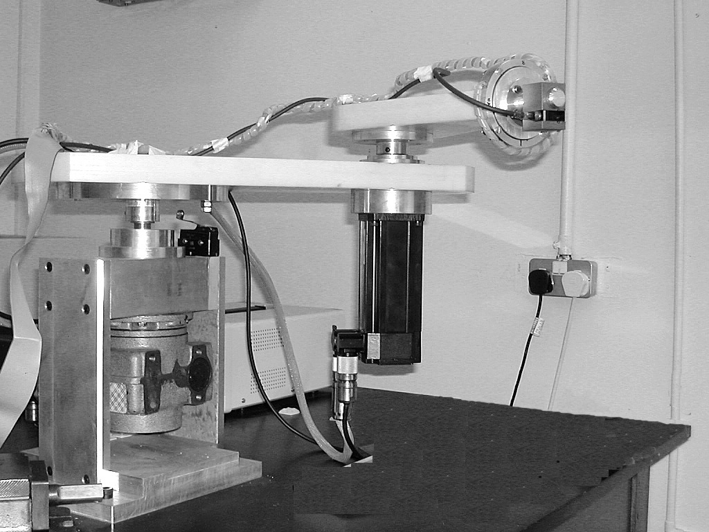

From learning AI to deploying it
Courses in machine learning often focus on how models are built and trained. Here, we carry that foundation through to deployment: How do we know whether a model will work in the setting where we want to use it?
| A typical AI / ML course may emphasize | This course adds |
|---|---|
| How models are trained | Whether learned behavior generalizes to new cases |
| Architectures and algorithms | How to choose among models for a real engineering setting |
| Benchmark performance | Evaluation under intended use conditions |
| Building a model | Deploying, monitoring, and updating an AI system |
| Predictive accuracy | Robustness, uncertainty, fairness, interpretability, and operational constraints |
| AI as a technical object | AI as part of an engineering and decision-making system |
| Generative AI tools | When and how GenAI should be trusted in practice |
AI deployment across engineering
The model may change from one field to another, but the deployment questions are remarkably consistent: What data shaped it? What does it optimize? Does it generalize? How do we evaluate it? What can fail? Who is affected?


Civil & Urban Engineering
Infrastructure inspection, transportation, demand forecasting, smart cities, and AI in the built environment.
Mechanical & Aerospace Engineering
Robotics, control, autonomous systems, sensing, and performance under noisy or changing conditions.
Electrical & Computer Engineering
Edge AI, specialized hardware, embedded systems, latency, resource constraints, and cloud-versus-device deployment.
Biomedical Engineering & Health
Medical imaging, prediction, patient-facing AI, safety, subgroup performance, and high-stakes evaluation.
Environmental Engineering
Water and air quality, sensing, forecasting, remote sensing, and heterogeneous physical settings.
Chemical & Biomolecular Engineering
Process monitoring, materials and molecular prediction, optimization, and AI with scientific or physical constraints.
Design & Technology Management
Analytic AI, technology adoption, product decision-making, user needs, and stakeholder-defined objectives.
Computer Science & Data Science
Model development, optimization, foundation models, generative AI, evaluation, and deployment infrastructure.
The course arc
A public view of the intellectual progression, without reproducing the full teaching materials, assignments, or assessments.
| Course arc | Questions students learn to answer |
|---|---|
| 1. How AI learns | Data, objectives, generalization, overfitting, model capacity, and learning paradigms. |
| 2. How we know whether it works | Data quality, evaluation, metrics, model selection, interpretability, and uncertainty. |
| 3. What happens in the real world | Robustness, changing conditions, scalability, latency, and operational constraints. |
| 4. AI across people and systems | Fairness, safety, responsibility, stakeholder needs, and deployment trade-offs. |
| 5. From model to deployment | Integration, monitoring, retraining, and system-level reasoning. |
| 6. Engineering applications | Cases across disciplines and connections to modern generative AI. |
| 7. Build and defend a deployment plan | Students develop and communicate a deployment-oriented prototype and evaluation strategy. |
A look inside the course
Course materials are built as interactive living notebooks: part textbook, part laboratory, part classroom discussion space.

Different settings, same AI questions
Students compare systems across engineering fields and identify the common pipeline behind them.

See what changes when the model changes
Interactive examples let students manipulate model capacity and reason about generalization rather than only read about it.

Would you deploy it?
Students make engineering decisions from evidence, identify what is missing, and defend what should happen next.
Full living notebooks, assignments, assessments, solutions, and detailed teaching materials are reserved for enrolled students.
A new course, developed across engineering
This is the first offering of a new course in a rapidly changing area. The curriculum has been developed through input from faculty across engineering and experience with AI systems being developed and deployed in research, industry, healthcare, infrastructure, and the public sector.
This year’s cohort will also help shape how the course evolves as we learn which concepts, examples, and hands-on experiences best prepare engineers to work with AI in their own disciplines.
Preparing engineers to make sound decisions about AI deployment
Students leave with a foundation for understanding AI and a framework for asking what evidence is needed to use it responsibly and effectively in engineering practice.